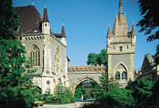

|
|
Sehenswürdigkeiten
am Heldenplatz |
| |
 |
Millennium Denkmal
- befindet sich am
Heldenplatz
im Stadtwald. Im Mittelpunkt steht das
Millennium Denkmal, das 1896 anlässlich der Feierlichkeiten im
Rahmen einer Weltausstellung zum 1000 jährigen
Jubiläum der Staatsgründung errichtet
wurde.
Der
vom Papst erst im Jahre 1000 n.Chr. gesegneten Staatsgründung
war eine
über 200 Jahre dauernde Periode kriegerischer
Auseinandersetzungen für
die Sicherung der neuen
Heimat vorangegangen. |
|
|
Ein Besuch des Heldenplatzes ist
ein Muss für kulturinteressierte Budapest-Touristen. Rechts
und links neben dem Millennium Denkmal mit den Helden der
Ungarngeschichte stehen zwei Museen: die "Kunsthalle" und
das "Museum der Schönen Künste". Das Bild links zeigt den
unteren Bereich der Siegessäule, das Teil des Heldendenkmals
ist. Da sieht man die sieben Stammesführer während der
Landnahme im Jahre 796.
|
|
Über die
Christianisierung der Ungarn wird im Allgemeinen
angenommen, sie begann mit der Krönung des Hl. Stefans.
Das war sicherlich ein entscheidender Zeitpunkt für die
langfristige Zugehörigkeit von Ungarn zur christlichen
Welt im westlichen Europa. Aber schon Attila war ein
Gläubiger, der den christlichen und gleichzeitig auch
noch den uralten Göttern der Ungarn huldigte. |
|
|
Wenig bekannt, weil vom Vatikan verschwiegen und
geleugnet wird die Tatsache, dass die Ungarn bereits mehrere
Jahrhunderte lang sesshaft in einem eigenen, christlichen
Land waren - das ein Riesenreich, ein Vielvölkerstaat mit
wechselnden Außengrenzen war, etwa zwischen Jerusalem und
dem heutigen Indien, ja sogar nördlich bis in der Mongolei.
Im Westen haben sie die Römer lange zurückgehalten von der
Eroberung Jerusalems. Das Zusammenleben von Ungarn, Juden
und Ägyptern in vorchristlicher Zeit wird in den Archiven
von Kairo berichtet. Die christliche Tradition dieses
Riesenreiches ist heute ein Relikt in mehreren Ländern im
Kaukasusgebiet. Inwieweit dies mit dem Judentum
zusammenhängt, wird noch lange geforscht, denn die
Wanderung, Abspaltung oder nur Glaubenswanderung nach Osten
weitgehend unbekannt ist.
|
|
|
In
der christlichen Lieratur kaum bekannt,
weil verschwiegen wird die
Tatsache, dass die Ungarn mit Attila mindestens zum dritten
Male
nach Europa zurückgekehrt waren. Damit Attila als Freund
und Verbündeter Roms an der
Königswahl der Hunnen teilnehmen konnte, wurde er von seinem
Ziehvater, dem Bischof von Padua, dem späteren Papst Leo I
in
ungarischer Sprache erzogen. Das marmorne
Dokument in der St. Peter
Basilika von Rom (Bild links), der Altar von Leo I dem Großen erinnert an das Treffen von Leo
I mit
seinem Ziehsohn in Rom am Tag vor der bevorstehenden Schlacht, als der Papst
Attila um Gottes Gnade und damit um die Verschonung von Rom
bat. Da wird Attila als Peitsche Gottes
dargestellt.
Es kursieren unterschiedliche
Gerüchte, warum Attila im Morgengrauen vor der entscheidenden
Schlacht resignierte. Fakt ist, dass er bei Sieg nach den damaligen Kriegssitten sowohl seinen
Ziehvater Leo I, als auch seinen Stiefbruder Flavius Aetius
mit eigenen Händen hätte umbringen müssen und das wollte er
nach dem Treffen nicht. Die Nacht vor der letzten Schlacht zur
Eroberung Roms betete er solange, bis er vor Erschöpfung nur
noch schwarze Katzen und Raben sah und vermeintlich davor resignierte. |
In einem Artikel in der "American academic journal"
(2000) wurden den Ungarn genetisch nachgewiesen, dass sie
unter den heutigen europäischen Nationen das erste Volk in
Europa waren und bereits vor 40.000 Jahren in Europa lebten.
Auch die von den Ungarn verwendeten Runenzeichen in den
bosnischen Pyramiden geben einen Hinweis auf europäische
Zeiten, die 15 bis 30.000 Jahre zurückliegen.
|
Weitere
besuchswerte Sehenswürdigkeiten gleich hinter dem
Heldendenkmal sind: Zoo, Restaurant Gundel, Staatszirkus,
Burg Vajdahunyad, Rudersee, Kunsteisbahn,
Veranstaltungshalle
Petőfi.
|
|
|
Kulturbeflissene
Budapest-Touristen benötigen mehrere Tage allein für den
Heldenplatz. Zwischendurch empfehlen wir zur Entspannung einen Besuch in dem
von ausländischen Gästen stark frequentierten Thermal- und
Erlebnisbad Széchenyi. Es befindet sich etwas links hinter
dem Millennium Denkmal, ist das beliebteste Bad der
Budapester Bevölkerung
und zugleich der größte Bäderkomplex in Europa. |
|
Kunsthalle /
Műcsarnok
Adresse: Heldenplatz bzw. Hősök tere, rechts vom Millennium
Denkmal. |
|
|
Zur Weltausstellung und anläßlich
des 1.000 jährigen Jubileums der Staatsgründung im Jahre 896
eröffnete der ungarische König Franz Joseph die Kunsthalle
am Heldenplatz höchstpersönlich. Darin befindet sich die größte
Ausstellungsstätte von Ungarn, ein prägendes klassizistisches
Gebäude, zu erkennen an den nur 6 Säulen am Heldenplatz.
Temporäre
Ausstellungen zeigen Werke der bildenden Künste des
Kunstgewerbes, der Fotografie, sowie des Industriedesigns
und der neuesten Kunstströmungen aus Ungarn und aus aller
Welt. |
|
|
| |
Museum der Schönen
Künste / Szépművészeti Múzeum
Adresse: Heldenplatz
bzw. Hősök tere, links vom Millennium Denkmal. |
Im
Museumsgebäude mit 8 Säulen gegenüber der Kunsthalle reichen die Ausstellungen von
der Kunst der Antike - besonders Ägyptens - über die
europäische Malerei des Mittelalters bis in die Gegenwart.
Außerhalb Spaniens befindet sich hier die größte Sammlung
spanischer Kunst.
|
|
Burg
Vajdahunyad
Adresse: Olof Palme
sétány
rechts hinter dem Heldenplatz, direkt hinter dem
See im Stadtwald.
In der Burg befindet
sich das Staatliche Landwirtschaftsmuseum mit einer
ständigen Jagdausstellung. |
 |
|
Zum Millennium der
ungarischen Staatsgründung im Jahre 1896 wurde im
Stadtwäldchen ein architektur-geschichtlicher
Gebäudekomplex, eine etwas abgewandelte Kopie
des Wehrschlosses in Hunyadvár (heute Hunedoara in Rumänien)
mit romanischen, gotischen, Renessaince- und Barockelementen
nachgebaut. Hier befindet sich die Ausstellung zur
Landwirtschaft, Jagd und Forstwirtschaft mit vielen
Rekord-Trophäen aus ganz Ungarn. |
 |
Im Sommer:
Rudersee vor der Burg Vajdahunyad
Adresse:
Olof Palme sétány
rechts hinter dem Heldenplatz, direkt
hinter dem See im Stadtwald. |
|
|
Der Stadtwald erhielt seine jetzige Gestalt
im Jahre des ungarischen Millenniums im Jahre 1896. Es ist
ein beliebtes Ausflugsziel der Budapester und
Budapest-Besucher gleichermaßen. Ob am Tage oder abends, es
ist immer romantisch, in einem Boot vor der Burg Vajdahunyad
zu rudern. |
|
Im Winter:
Kunsteisbahn vor der Burg Vajdahunyad
Adresse: Olof Palme sétány
rechts hinter dem Heldenplatz, direkt hinter dem See im Stadtwald.
Hinter dem
Heldendenkmal wird im
Winter ein Teil vom
großen Stausee abgelassen und diese
Fläche ist danach die
größte Kunsteisbahn Europas. |
|
|
 |
Mehrere
Europameisterschaften in Eiskunstlaufen fanden schon auf dieser
Eisfläche statt.
Schlittschuhverlieh.
|
|
| |
Restaurant Gundel
Adresse: Állatkerti út 2 - links hinter dem Heldenplatz.
Telefonische
Platzreservierung (Tel: 468 40 40) ist notwendig, Gäste mit
der Budapest Karte erhalten eine Gundel-Pfannkuchen als Vorspeise,
das Markenzeichen des Restaurants. |
|
|
 |
Schon
zur Zeit der k.u.k. Monarchie speiste man in diesem
Nobelrestaurant europäischen Rufes mit der
exzellenten Küche im Stadtwald gleich neben dem
Elefantenhaus im Zoo - daher der Logo des
Restaurants mit den Elefanten. Das Gundel und sein
elegantes, mit barocken Elementen geschmückte,
denkmalgeschützte Gebäude gehören zu den
Sehenswürdigkeiten im Stadtwald. |
|
| |
Das Gebäude wurde bereits 1874 gebaut und beherbergte
ursprünglich das weniger erfolgreiche Restaurant der
Gastronomenfamilie Wampetics, bis es 1894 vom weltgereisten
Spitzenkoch Johann Karl Gundel senior aus Bayern aufgekauft
wurde. Gundel verstand es, die ungarische Küche mit
französischen Kochkünsten zu kombinieren, die er in
Spitzenrestaurants in der Schweiz und Böhmen gelernt hatte.
Das Restaurant Gundel errang in den 1930er Jahren Weltruhm
mit einem kulinarischen Pfannkuchenrezept. Mit viel
Schnickschnack an den Tischen und dem berühmten
Gundel-Pfannkuchen, mit einer in Rum getränkten
Walnuss-Rosinenfüllung und Vanille-Schokoladenüberguss (Angeblich ein
Crèpe-Rezept aus Paris à la maison, in der Tat aber ein
uraltes Pfannenkuchen-Rezept aus Kroatien, das dort "Himmel
und Erde" genannt wird) lockte das Restaurant
bereits in den 1930er Jahren viele Besucher an, als die
Ungarn noch davon überzeugt waren, dass Pfannkuchen eine
ungarische Landesspezialität sei.
Der in New
York lebende und seit 1991 Mitbesitzer des Restaurants G.
Lang schrieb 1980 ein Lehrbuch für Spitzenrestaurants: "Compendium
of Culinary Nonsence". Die Titulierung mit Nonsence ist
weitgehend zutreffend dafür, was bei Gundel
serviert wird. - Ungarische
Gerichte werden hier fantasievoll bis zur Unkenntlichkeit
nachempfunden. Der ausländische Gast, der echte ungarische
Landesspezialitäten sucht, wird hier definitiv verschaukelt
und findet auch nichts zum Reinbeißen. Im Allgemeinen
gilt: bei Gundel schmeckt alles, Gundel ist teuer,
alle Köstlichkeiten des Hauses werden für die Dritte Zähne
Kundschaft von damals zubereitet - süß und kalorienreich. G.
Lang verstand es bestens, das ursprünglich Kulinarische in
einem weltbekannten Spitzenrestaurant laufend auf Weltniveau
zu halten. Spitzenköche aus aller Welt pilgern nunmehr seit
Jahrzehnten nach Budapest und fragen zuerst nach dem
Standort von Gundel, das auf welchen Wegen auch immer, in
die Hände der Hilton-Kette geriet und von der Danubius-Kette
verwaltet wird - bei der Privatisierung "vergaß" man die
Gundel Erben genauso, wie am Vörösmarty tér Platz die
Gerbaud-Erben...
|
|
Zoo - und
Botanischer Garten
Adresse: Állatkerti út Weg 6-12 im 14. Stadtbezirk - links
hinter dem Millennium Denkmal im Stadtwald.
|
|
|
|
Der
Budapester Zoo wurde vom reisenden Ethnographen Johannes
Xantus im Jahre 1866 gegründet. Er ist nach dem Londoner Zoo
der zweitälteste Zoo in Europa und war im Jahre 1900 der
modernste weltweit, heute ist er denkmalgeschützt. Etwa 500
Tierarten werden hier in naturnaher Umgebung präsentiert. Im
kürzlich renovierten Pflanzgarten mit Palmenhaus können etwa
4000 Pflanzenarten bewundert werden. |
|
| |
Staatszirkus
Adresse: im Stadtwald (14. Bezirk, Állatkerti út),
neben
dem Zoo, gegenüber Széchenyi Heilbad. |
|
Széchenyi Erlebnis- und Heilbad
Adresse: im Stadtwäldchen - 14. Stadtbezirk, Állatkerti út.
Vom Heldenplatz kommend links hinter dem Stadtwäldchensee,
gegenüber Staatszirkus und Vergnügungspark. Es ist
wahrscheinlich der beliebteste Badebetrieb der Budapester
Bevölkerung, der auch von vielen Ausländern besucht wird.
mehr über das
mit einem großen Kurbetrieb |
|
|
Petőfi-Halle
Veranstaltungshalle
im Stadtwald - im 14. Stadtbezirk. |
|
 |
Die Ferienwohnungen
und
befinden sich am Oktogon tér Platz, von hier fährt
man
3 Haltestellen zum Denkmal und zu den Museen, 4
Haltestellen zum |
|
| |
| |
Ungarn-Tourist Team

|
 |
|